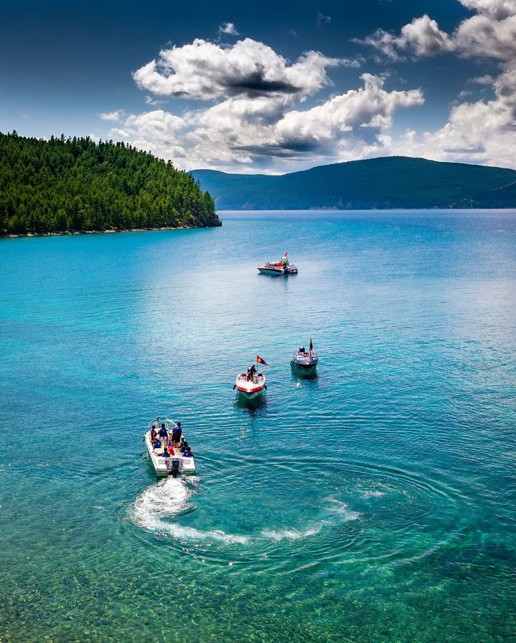

01
LAKES & NATURE
Lake Khuvsgul
Discover one of Mongolia's most celebrated lakes, known for its remarkably clear freshwater, mountain surroundings, and forested shores. A beautiful destination for nature lovers and photographers.